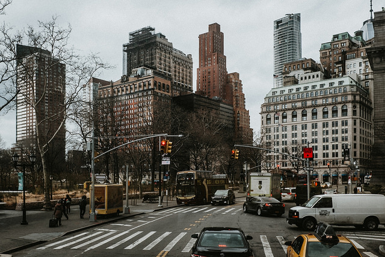

Gains and losses in rent-stabilized apartments
As the affordable housing crisis deepens, rent stabilization is more important than ever

(Image by Jörg Schubert via Flickr)
By Emily Suzanne Lever
New York City is in an affordable housing crisis.
Ten years after the financial crisis and the recession, recovery is arguably nowhere to be found,
according to Sarah Sheon Gerecke, the deputy assistant secretary for the Office of Housing Counseling
at the US Department of Housing and Urban Development.
“We have to stop saying we’re back to normal just because a few data points are back to pre-2009 levels,”
Gerecke said. “No one who experienced the crisis is the same today.”
In concrete terms: people are still struggling to keep a roof over their heads. According to the
2017 New York
Housing and Vacancy Survey, the median renter in New York City paid 33.7% of their income towards rent
in 2017, a number that has held steady since 2011. That means at least half the renters in the city are
"rent burdened." About 3 in 10 renters spend at least half their income on rent.
One of the mecanisms to ease the burden of rent on working people in New York City has
historically been rent
stabilization. The city's Rent Guidelines Board controls how much rents in the roughly 996,000
rent-stabilized apartments across the city can be raised each year. However, apartments can become
market-rate when they pass out of rent-stabilization, which can happen when the rent is increased
above $2,700 or for some other reasons. So the rent-stabilized stock fluctuates over the years.
Losses and gains vary widely across
the city, according to data on rent-stabilized units compiled by John Krauss. From 2007 to 2014,
the Upper East Side (Manhattan community Board 8) has increased its number
of rent-stabilized units by 0.37%, while DUMBO and Ocean Hill-Brownsville (Brooklyn community boards 2
and 16) lost about 0.5% each.